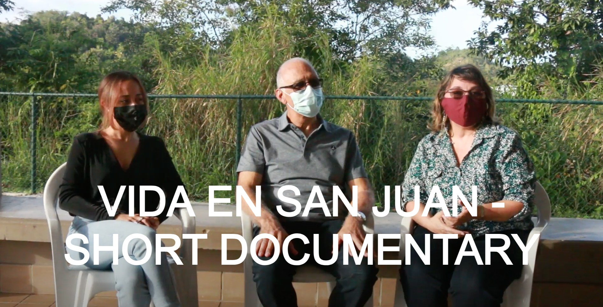
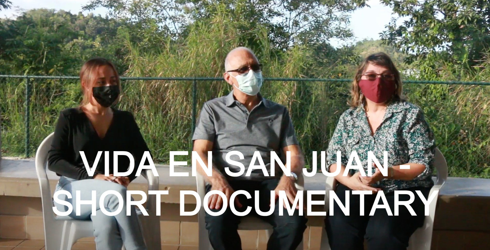
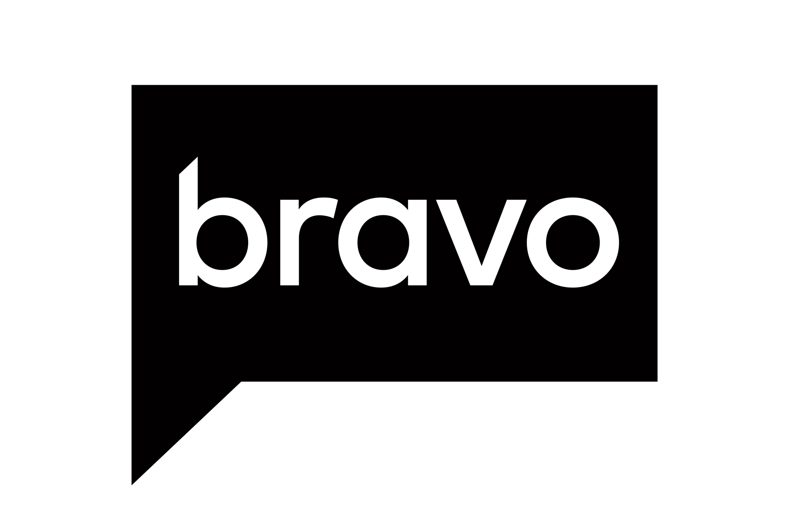
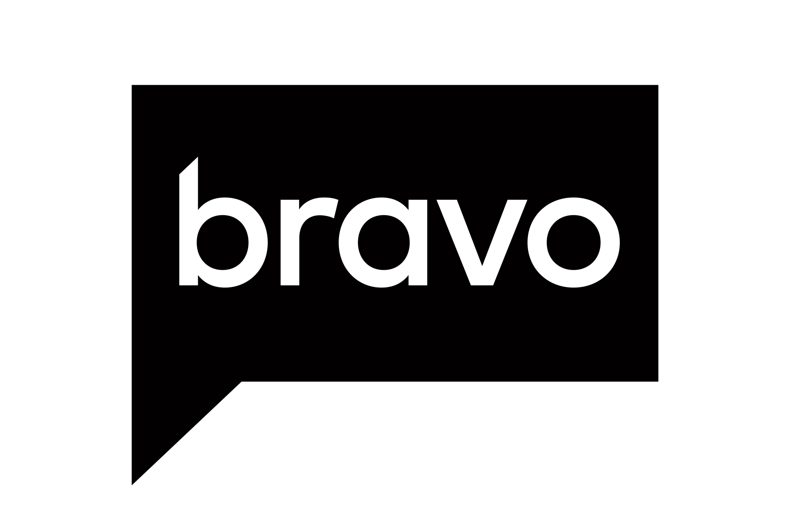
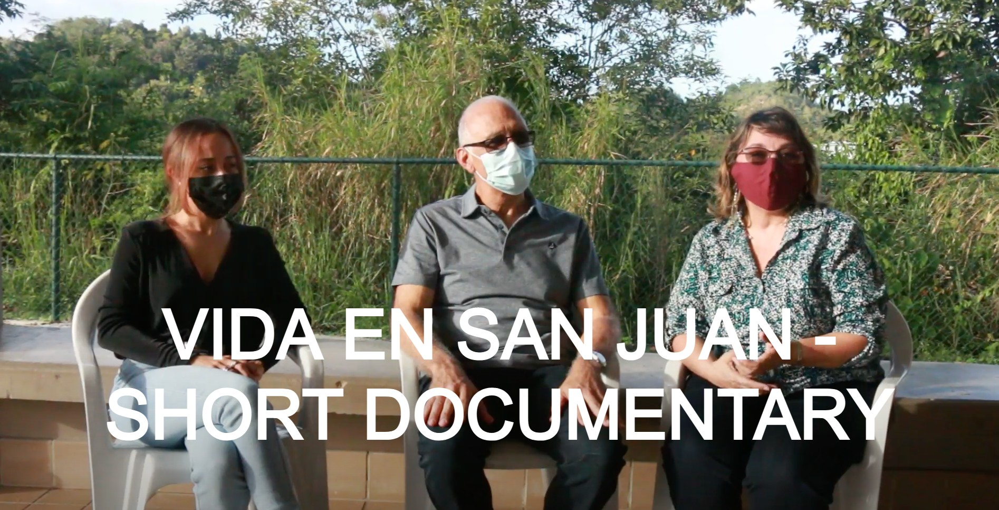
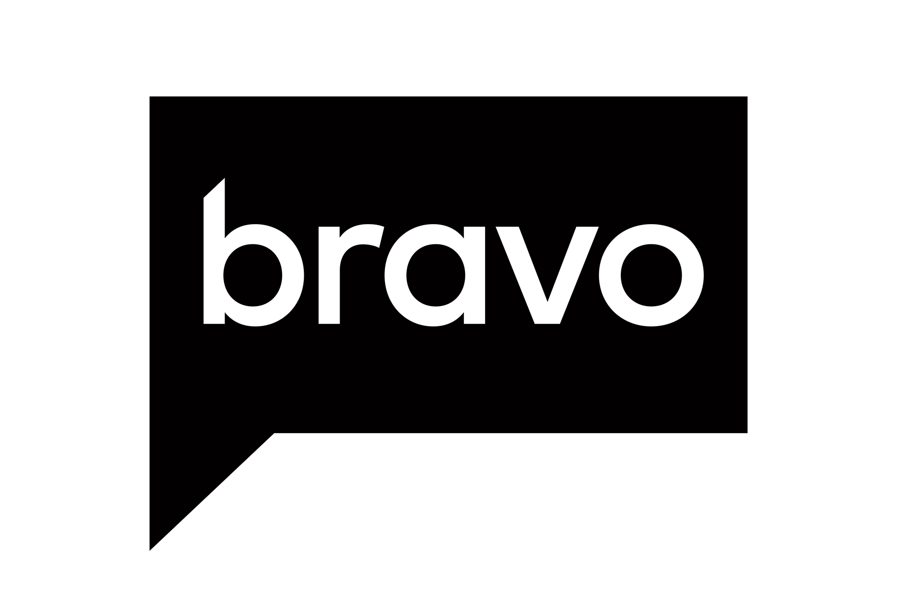

Experience
 

 

| Nicole Garcia | experience about contact |
Current undergraduate student at Boston College studying film and marketing. I have continuously worked in the entertainment industry and am now exploring journalism. I value storytelling and promoting meaningful connections.Download CV |


From Web Design to Post-Production, I have always been a creative. I am self-taught in Premiere Pro and learned the basics of After Effects and Photoshop. Video is my go-to medium of choice and I've always used videos as a way to express myself. Check out more on my YouTube Channel, Vimeo, and TikTok for more!
I've also had prior experiences managing social media accounts on Twitter. I'd like to learn how to apply these skills in a professional role to share important stories.
I am a huge dog-lover excited to own my dog one day and my favorite food is sushi!
| +1 347 551 3484 | |
| ngarcian02@gmail.com | |